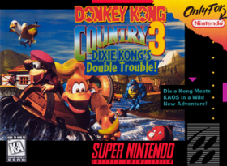

Esse site tem como objetivo, colocar em prática todo o conhecimento que está sendo adquirido no Curso de HTML5 e CSS3 do Curso em Vídeo do professor Gustavo Guanabara.
Todos os conteúdos aprendidos durante cada aula, será aplicado aqui em forma de algum tipo de conteúdo aleatório
E além disso, todas as alterações feitas durante esse processo será enviada para nosso repositório no GitHub, a fim de deixar documentado nosso processo de aprendizado.
*Bola de futebol ⚽
**Bola de Basquete 🏀
***Bola de Futebol Americano 🏈
****Bola de volei 🏐
****Ciclismo 🚴
***Natação 🏊
**Musculação🏋
*Surf🏄
Para colocar as primeiras imagens no nosso site de aprendizado, vamos fazer isso colocando imagens de capas de jogos que mais gostamos do super Nintendo, nosso videogame do coração.
Iremos colocar imagens direto de dentro da pasta principal e também de subpastas e também utilizando links externos.
Lançado no Japão em 1990 (como Super Famicom) e no Ocidente a partir de 1991, o Super Nintendo Entertainment System (SNES) foi o lendário console de 16 bits da Nintendo que definiu uma era dos videogames e venceu a icônica disputa contra o Mega Drive. Destacando-se pelo inovador efeito visual Mode 7, um chip de som dedicado da Sony com áudio quase orquestral e um controle ergonômico pioneiro de quatro botões frontais mais dois de ombro (L e R), o aparelho construiu uma biblioteca atemporal de clássicos como Chrono Trigger, Super Mario World e Donkey Kong Country.

Lançado em 1990 para o Super Nintendo (SNES), Super Mario World é um dos jogos de plataforma mais aclamados da história, acompanhando Mario e Luigi em sua missão pela Dinosaur Land para resgatar a Princesa Peach e os ovos de dinossauro das garras de Bowser. O título marcou época ao introduzir o companheiro Yoshi, mecânicas inovadoras como a capa de voo (Cape Feather) e um mapa-múndi não linear repleto de passagens secretas e rotas alternativas que revolucionaram o gênero.


Donkey Kong Country 3: Dixie Kong's Double Trouble! é um jogo eletrônico de plataforma desenvolvido pela Rare e publicado pela Nintendo para o Super Nintendo Entertainment System em 1996. É a terceiro título da série Donkey Kong Country e serve como uma sequência direta de Donkey Kong Country 2: Diddy's Kong Quest.
